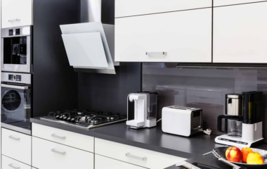

Toshkentda maishiy texnika ta'mirlash
Uyda maishiy texnikani mustaqil ravishda ta'mirlash deyarli mumkin emas. Ushbu holat
muayyan maishiy texnikani ta'mirlash uchun zarur jihozlar va ko'nikmalarning yetishmasligi
bilan izohlanadi. Ushbu soha mutaxassislariga kelsak, ular asboblardan tashqari, turli xil
maishiy texnikalarni ta'mirlash va tiklash bo'yicha tajribaga ega. TeleService mutaxassisi
yordamining afzalligi shundaki, ish imkon qadar tezroq amalga oshiriladi. Qoida tariqasida,
ta'mirlash va tiklash ishlari mijozning uskunasi joylashgan joyda amalga oshiriladi. Istisno
hollarda, muvaffaqiyatsiz qurilma to'g'ridan-to'g'ri xizmat ko'rsatish markazida tiklanadi. Ishni
boshlashdan oldin buzilishning haqiqiy sababini aniqlash uchun tashxis qo'yiladi. Bundan
tashqari, diagnostika bepul. Barcha ishlar ham kafolat bilan birga keladi. Kafolat muddati
davomida uskunaning ishlashida nosozliklar yuzaga kelgan taqdirda, mijoz yana buzilishlarni
.
Do'konda uskunani sotib olayotganda, biz ishlab chiqaruvchining aybi bilan yuzaga kelgan nosozliklar uchun uni ta'mirlash uchun kafolatlar olamiz.
Ammo ko'pincha boshqaruv elementlarini noto'g'ri ishlatish, mikroelektronika platalarida namlik, uzatish paytida mexanik shikastlanish, tasodifiy
zarbalar, nostandart quvvat manbalariga ulanish va boshqa ko'plab harakatlar bizni uy jihozlarining buzilishida aybdor qiladi. Bunday "muammolar"
kafolatli ta'mirlanmaydi va ko'p hollarda havaskor hunarmandlarga murojaat qilish vaziyatni yanada kuchaytiradi. Uskunangiz samarali va ishonchli
xizmat ko'rsatishda davom etishi uchun kafolatsiz nosozliklarni bartaraf etish ishlarini TeleService mutaxassislariga topshirgan ma'qul.
Maishiy texnikani shoshilinch ta'mirlash
Muzlatgich to'satdan qolgan
ishlash tezligi katta
ahamiyatga ega,
ammo bu bezovtalik
nafaqat
muzlatgichlari, balki
yuvish mashinasi,
mikroto'lqinli pechlari va boshqalar bilan ham muammolari bo'lgan
oilalar uchun juda muhimdir. ..d. Favqulodda vaziyatlarning aksariyati
odamlarning qulayligi, salomatligi va farovonligi bilan bog'liq. Shu
sababli, bizning texnik xodimlarimiz eng zamonaviy asboblar bilan
ishlaydi va maishiy texnikani ta'mirlashning barcha jihatlari bo'yicha
mustahkam bilimga ega. TeleService quyidagi ishlab chiqaruvchilarning
maishiy texnikalarini ta'mirlaydi: LG , SONY , Toshiba, Philips, Moulinex,
Krups , Tefal va Rowenta.
Maishiy texnikani ta'mirlashni qayerga buyurtma
qilish kerak?
Biz maishiy texnikaning har bir qismini ta'mirlashning o'ziga xos
xususiyatlarini bilamiz va uning mukammal ta'mirlanishi va tez
tiklanishiga kafolat bera olamiz, shundan so'ng u tezda odatdagi ish
rejimiga qaytadi. Bizning bilim va tajribamiz har qanday vaziyatda
o'zingizni qulay va xavfsiz his qilishingizga yordam beradi.
bizning xodimlarimiz maxsus texnik ma'lumotga ega bo'lgan
malakali mutaxassislarni ishlaydi;
biz televizor, video va audio uskunalarni ta'mirlashda katta
tajribaga egamiz;
bizda uyga borish imkoniyati bor;
Biz yuqori sifatli original ehtiyot qismlar va komponentlardan
foydalanamiz;
biz mijozning muammolariga e'tibor qaratamiz, biz individual
yondashuvni qo'llaymiz;
bizning narxlarimiz juda sodiq.
Havo tozalagich: turlari, afzalliklari
kamchiliklari
Bugungi kunda havo tozalagichlar uylar va
kvartiralarda tobora ko'proq
foydalanilmoqda. Buning uchun zaruriy
shartlar turli xil salbiy omillar - yaqin bo'lish

Oshxonadagi maishiy texnikaga
g'amxo'rlik qilish kerak?
To'liq rostini aytaylik, maishiy texnika bizga
juda katta vaqtni tejaydi va kam odam
hayotni ularsiz tasavvur qila oladi. Shunday qilib
Robot changyutgich: asosiy,
navlar, harakatning mohiyati, tanlash
Maishiy texnika bozori juda xilma-xildir.
Robot changyutgich innovatsion
ishlanmadir. Bunday mahsulotlarning
birinchi modellari yuqori narxga ega edi va
mavjud edi